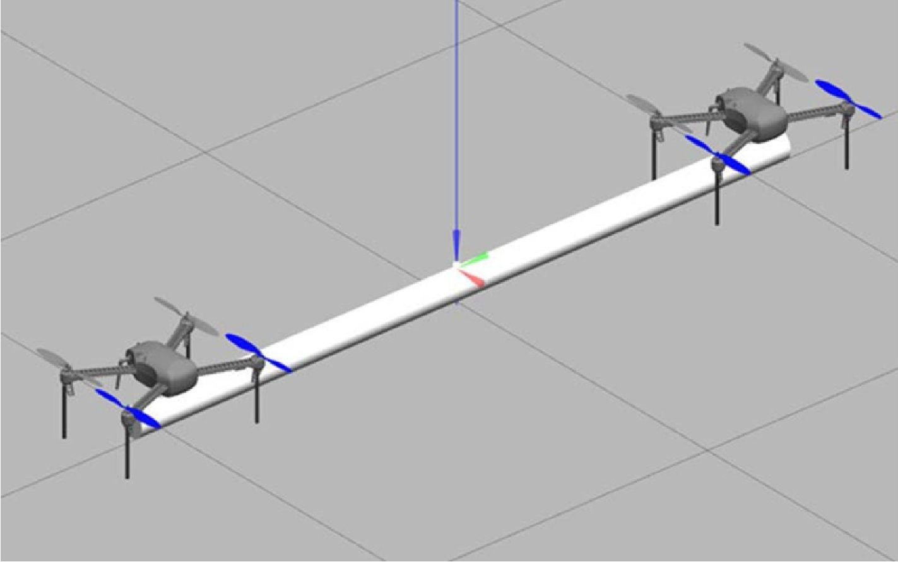
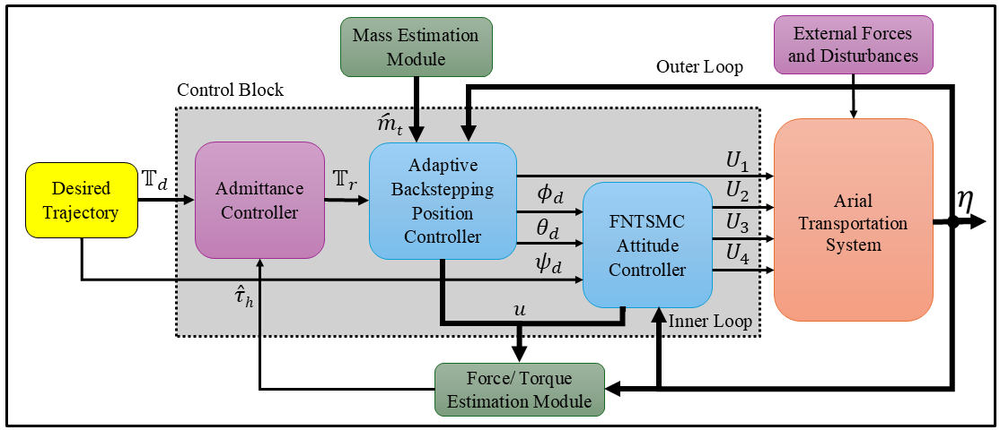

Assistive Aerial Cooperative Payload Transportation Using Quadrotor UAVs with Human Physical Interaction
Description:
This work presents the design and implementation of a novel assistive dual-UAV (quadrotor) system for cooperative payload transportation guided by human physical interaction. The system aims to reduce human workload and enable seamless and intuitive collaboration between the user and aerial vehicles. The user can apply direct forces and torques to the transported payload to guide the system. The human-applied forces and torques are either measured using force-torque sensors or estimated from the system dynamics to reduce hardware complexity and cost. A robust control framework combining admittance control with nonlinear control strategies, including sliding mode and backstepping controllers, is developed to achieve accurate human-guided trajectory tracking, system stabilization, and effective compensation for disturbances and model uncertainties. The stability of the controllers is verified through Lyapunov-based analysis. Furthermore, an adaptive robust control scheme is designed to accommodate unknown payload parameters, enhancing the system’s adaptability and performance in cooperative transportation tasks.
 |
 |
|